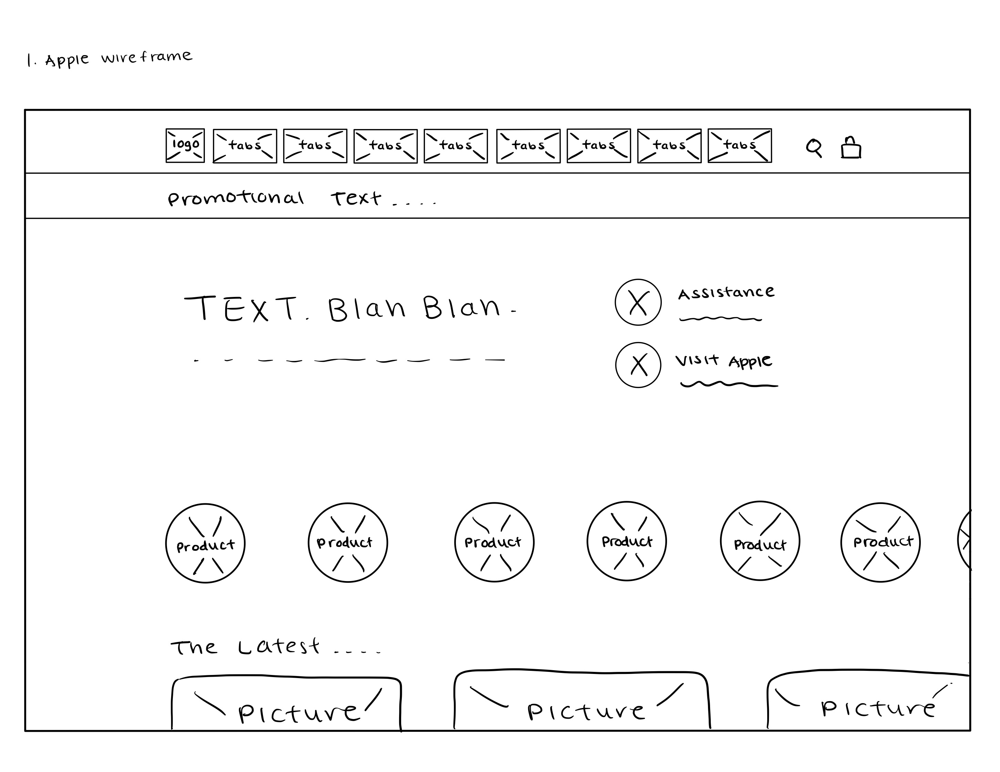
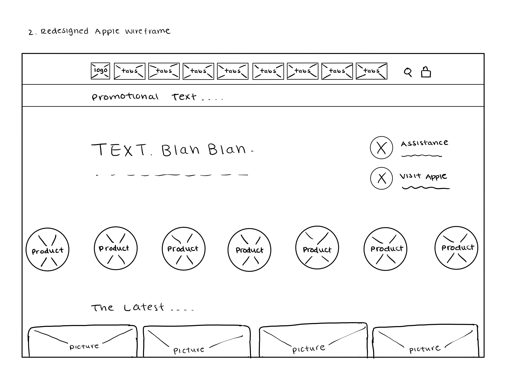

-
Using the favorite website you chose in homework 1, create a wireframe for one page of it using pen/paper, PowerPoint, or any your tool of choice. (use the 'img' tag!) Make sure to let us know what the name of your website is (Use the 'p' tag!)

-
Try to improve the website you've chosen, and create a redesigned wireframe of one page for the same website using the principles of visual hierarchy that you learned from the article.

-
What is the goal of the website? Who is it intended for? How does the design accomplish this? Write 2-3 sentences answering these questions. (Use the 'p' tag again!)
The Apple website aims to promote its latest products, persuading consumers to purchase. Apple's website achieves its intentions by displaying big, clickable, stock photos taken on a black background to captivate consumers' eyes. Apple also displays all the different types of products they sell at the top, so consumers can click in to find out more details.
-
Write 2-3 sentences about what problems your redesign addressed, and how it solved them.
My redesign of Apple's website eliminated unnecessary negative white space by shifting its display of products to the right. Through my experience of navigating the website, when I clicked on their store tab, their product icons were off-centered. The icons would center themselves as you scroll to the left to view more products; however, they would initially be centered on the left side and not the right. By evening out the margins on both the left and right sides, it created a balance as you scroll down the website.
NOTE: Make sure to include the wireframe images in the website and don't just put it in your assets folder!
Your wireframes should look something like this: